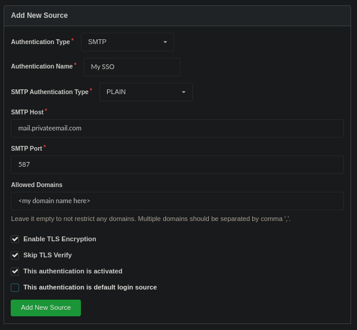

Simple, Cheap Same Sign-On with Email
I don't have to tell anybody that managing multiple credentials for multiple people is a pain. There are several single/same sign-on protocols already, but most are very complicated or proprietary, with limited support.
When setting up a NextCloud for my family and personal use I just used my email host as a source for same sign-on. I re-used this with a few self-hosted services I run with Docker on AWS LightSail servers.
Email Hosting
Email sucks, but it's still usually a necessity. Running an email server is notoriously touchy, so I've opted to use NameCheap Private Email. It is very inexpensive, and I already use NameCheap for domain registration, so it will automatically configure my domain records.
In addition to accounts for each family member, I added a system@
account for NextCloud and other utilities to be able to send notifications,
password resets, etc. without storing my personal password in each app.
NextCloud
NextCloud is an open source file sync platform that includes an office suite as well as many other apps and integrations. It has an official External user authentication app that supports IMAP.
After experimenting with setting up NextCloud manually with Docker, I found an inexpensive managed host. I don't have to install, update, fix issues, or back up manually, and even with the cost of this and email hosting together, I'm paying much less than the lowest tier Dropbox account, which only gives me file sync, while NextCloud serves as a replacement for Google Workspace or Office 365.
A few of the apps (Maps, Music, Talk) aren't really that great, but I have found Deck, the Kanban project management tool, to be surprisingly good. I use it to plan trips and keep track of complex bureaucratic processes. It integrates well with the Calendar and Tasks apps, and I prefer it to most other dedicated Kanban tools.
After setting up NextCloud and adding the External user authentication app, I had
to manually edit the nextcloud/config/config.php file and add the following:
'user_backends' =>
array (
0 =>
array (
'class' => '\OCA\UserExternal\IMAP',
'arguments' =>
array (
0 => 'mail.privateemail.com',
1 => 993,
2 => 'ssl',
3 => '<my domain name here>',
4 => true,
5 => false,
),
),
),Self-Hosted Source Code
Even though GitHub now has free private repositories, I like having my own backup & the ability to give clients private access without restriction. I tested Gitea's SMTP authentication option and found it to work great, but ended up going with Gogs because it also supports SMTP authentication and works better with Docker. Both are great substitutes for GitHub.
For example, this is how I set up Gogs with NameCheap's server:

IRC Hosting and PAM Authentication
I have a small, mostly unused IRC server which authenticates through my email host as well. I'm using ngIRCd, which supports Linux PAM. PAM has many modules, one of which (pam_exec) allows you to use a shell script to do custom authentication. I used this to authenticate against my IMAP server. I also wrote a Docker image to automate this:
FROM alpine:3.16
RUN apk --no-cache add curl autoconf automake pkgconfig \
openssl make gcc g++ openssl-dev linux-pam-dev linux-pam
WORKDIR /opt
RUN \
curl -L https://github.com/ngircd/ngircd/archive/refs/tags/rel-26.1.tar.gz -o ngircd.tgz && \
tar xvf ngircd.tgz && \
mv /opt/ngircd-rel-26.1 /opt/ngircd
WORKDIR /opt/ngircd
RUN \
./autogen.sh && \
./configure --with-openssl --with-pam && \
make && \
make install
RUN \
apk del curl autoconf automake pkgconfig make gcc g++ \
openssl-dev linux-pam-dev
WORKDIR /scripts
RUN \
rm /opt/ngircd.tgz && \
rm -rf /opt/ngircd
COPY scripts /scripts
COPY etc/pam.d /etc/pam.d
EXPOSE 6667
EXPOSE 6697
VOLUME ["/config/ngircd"]
CMD [ "/scripts/start.sh" ]Since the environment variables I set in my docker-compose.yaml aren't
available within PAM, the start.sh script stores them:
#!/bin/sh
printenv > /scripts/environment
ngircd -f /config/ngircd/ngircd.conf -nThe auth.sh script can then retrieve the environment variables and use openssl
to login to the IMAP server and check the credentials:
#!/bin/sh
IMAP_PASSWORD=`cat -`
source /scripts/environment
IMAP_LOG=$(openssl s_client -quiet -crlf -connect "$IMAP_HOST:$IMAP_PORT" <<EOF
A1 LOGIN $PAM_USER $IMAP_PASSWORD
A2 LOGOUT
EOF
)
if echo $IMAP_LOG | grep "A1 OK" - > /dev/null; then
exit 0
fi
exit 1 The /etc/pam.d/ngircd config file tells PAM how to use this:
auth required pam_exec.so stdout expose_authtok log=/var/log/pam_exec.log /scripts/auth.shThe only step after this is to make sure PAM = yes in the [Options] section
of ngircd.conf.
This can be used for any of the many servers and apps that support PAM authentication.
I've published the Docker image at errilaz/emauth-ngircd and source code is on GitHub.
Other Bridges
Some servers also support hitting an HTTP proxy or SSH daemon to verify credentials. It would be trivial to bridge these methods to IMAP in the same way as the bash script above. This opens up the possibility of using this simple, cheap same sign-on with tons of software.
You could use a full IMAP library to achieve this, but as the OpenSSL example shows, it is very simple with a TLS socket. I have tested this TypeScript code and plan to use it for any other bridges I create in the future (which I will share).
I've also published this on NPM and GitHub.
import tls from "tls"
const CRLF = "\r\n"
export default function authenticate(host: string, port: number, username: string, password: string) {
return new Promise<boolean>((resolve, reject) => {
const socket = tls.connect({ host, port, servername: host })
let response = ""
socket.once("secureConnect", connect)
socket.once("end", disconnect)
socket.on("data", receive)
socket.on("error", error)
function connect() {
socket.write(`A01 LOGIN ${username} ${password}${CRLF}`)
socket.write(`A02 LOGOUT${CRLF}`)
}
function receive(data: Buffer) {
response += data.toString()
}
function disconnect() {
socket.off("data", receive)
resolve(/^A01 OK/gm.test(response))
}
function error(error: any) {
socket.off("data", receive)
reject(error)
}
})
}